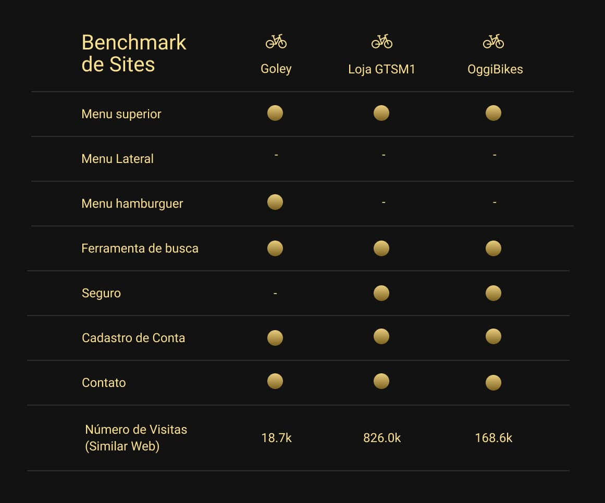
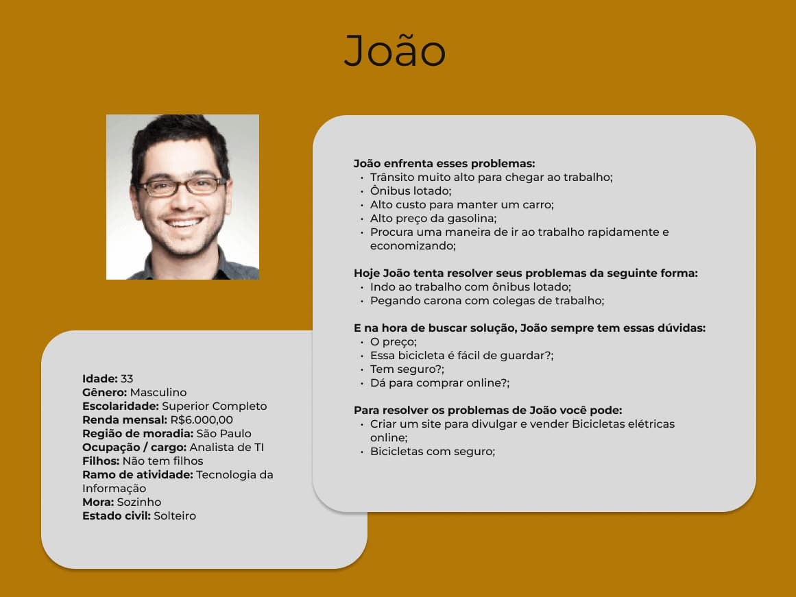
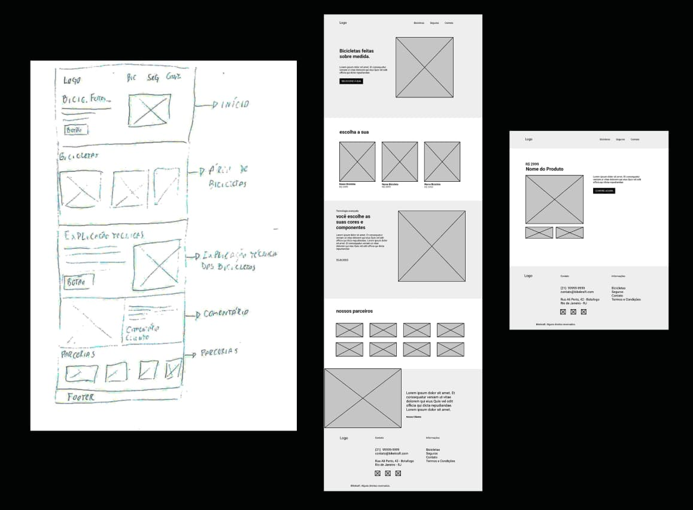
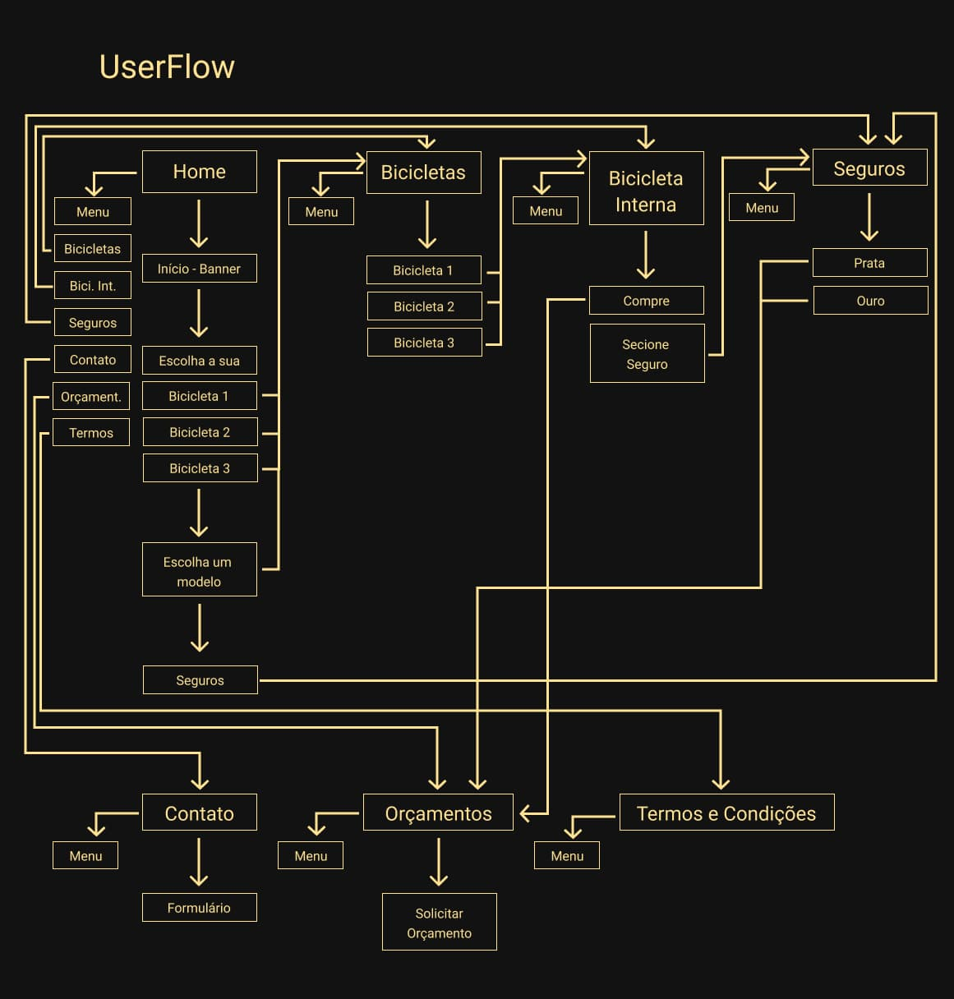

Bikcraft
Dê uma olhada no Protótipo
Dê uma olhada no em HTML pelo link: Site Bikecraft
A ideia
O Bikecraft é uma marca fictícia de venda de bicicletas elétricas que precisa de um site, feita durante o curso UI Design para iniciantes, da Origamid. Esse estudo foi desenvolvido para simular alguns processos do desenvolvimento de um site.
Método
Para o desenvolvimento, foi utilizado o método de Design Thinking, Double Diamond, onde são mapeados os processos divergentes e convergentes dentro do processo de design.

1 - Descobrir:
Foram feitas algumas pesquisas para entender melhor sobre o produto a ser desenvolvido, com um Briefing com o cliente e um Benchmark com a concorrência
2 - Definir:
Com os dados na mão, foi possível mapear o público alvo, utilizando a criação de um Storytelling, para ajudar na elaboração de uma persona. A identificação de Stakeholders também é um estudo que ajuda a definir os envolvidos no processo.
3 - Desenvolvimento:
No desenvolvimento, foram criados as primeiras ideias e wireframes de baixa e média fidelidade, para entender o que poderia ser desenvolvido para solucionar os problemas.
4 - Entrega:
Wireframes de alta fidelidade, protótipo e site foram desenvolvidos moldados às necessidades observadas.
Briefing
- 01.Qual o nome do site?
- Bikcraft
- 02. Ramo de atuação e tempo de mercado?
- Varejo
- 03. Produtos e/ou serviços oferecidos?
- Venda de Bicicletas
- 04. Por que você está criando esse site? O que você espera realizar?
- Queremos aumentar nosso alcance e vender pela internet.
- 05. O que você está oferecendo a seu público?
- Bicicleta
- 06. O que você quer que os usuários façam em seu site?
- Conheçam nosso produto e comprem as bicicletas
- 07. Que tipo de site ele será? (Puramente promocional? Coletor de Informações? Uma publicação? Um ponto de venda?)
- Uma porta de entrada para a empresa, sendo um ponto de venda para a empresa
- 08. Que recursos ele terá (Sistema de publicação? Animações flash? Sistema de e-commerce? Nenhum recurso adicional? Outro sistema? Se sim, especifique.)
- Queremos uma vitrine para anunciar nossos produtos
- 09. Quantas páginas o site deverá ter?
- Home, Bicicletas, Contato, Seguros e Orçamentos
- 10. Quais são seus 3 principais concorrentes?
- 1 - https://www.golev.com.br/ - 2 - https://www.lojagtsm1.com.br/ - 3 - https://oggibikes.com.br/
- 11. Quem é seu Público-Alvo?
- Pessoas interessadas em ter uma maior mobilidade. Normalmente, jovens com interesse em tecnologia, de 25 a 35 anos, que já estejam bem empregados.
- 12. Quem é seu Público-Alvo?
- Pessoas interessadas em comer comida japonesa.
- 12. Você está imaginando uma certa aparência para o site?
- Sim, gosto muito do site da Goley. (Ver link 01 de concorrentes)
- 13. Você tem padrões existentes, como logos e cores, que devem ser incorporados?
- Sim tenho uma Logo e deve seguir os padrões de cores
- 14. Quais são alguns outros sites da web que você gosta?
- 1 - https://www.vanmoof.com/en-US - 2 - https://www.tesla.com/?redirect=no
Público Alvo
Pessoas interessadas em ter uma maior mobilidade. Normalmente, jovens com interesse em tecnologia, em sustentabilidade, de 25 a 35 anos, que já estejam bem empregados.
Benchmark
Para entender melhor o que a concorrência estava fazendo, foi feito uma pesquisa de Benchmark e essa pesquisa, baseada nos sites que o cliente mostrou preferência, nos mostrou alguns pontos em comum, que foram usados para o desenvolvimento do site.
Story-Telling
Com base no público-alvo e nas necessidades do cliente, foi possível entender um pouco melhor do público a ser atingido, dando abertura para a criação de uma pequena história para imaginar como é este usuário. Era uma vez, um rapaz que trabalhava com tecnologia e todos os dias, pegava um ônibus muito cheio até chegar aos trabalho. Com o trânsito muito alto, não valia a pena ir de carro todos os dias, até pelos custos de manter um carro e da gasolina em si, esse homem deixava o carro em casa, mas analisava uma forma que fosse mais rápida, mais confortável que o ônibus e mais econômica que o carro. Então, um dia, conversando com um amigo, descobriu que este amigo utilizava uma bicicleta elétrica para ir até o trabalho, decidindo por comprar uma bicicleta elétrica.
Persona
Surgiu a partir do estudo do Story-Telling, personificando a pessoa da história, ajudando no desenvolvimento do produto, mantendo todos no foco das necessidades do cliente.
Identificação de Stakeholders
Após essa etapa, os stakeholders, ou seja, todos aqueles que seriam afetados pelo projeto, foram identificados. Investidores, colaboradores, concorrência, empresas parceiras, clientes e a cidade, pois terá menos emissão de CO2 na atmosfera, diminuindo a poluição.
O desenvolvimento do Projeto
Foi criado um site para atender as necessidades do cliente, sendo desenvolvido, a partir da análise do Briefing do cliente, do estudo da concorrência e de um levantamento do público do cliente. Com o desenvolvimento da ideia, houve algumas mudanças, como a mudança de alguns títulos ou a ordem de aparência do comentário do cliente e das parcerias, que foram invertidas no seu desenvolvimento.
Fluxo
O site é composto de 7 páginas: Página principal, Bicicletas, Bicicletas internas, Página de Seguros, Contato, Orçamento e Termos e condições.
O funcionamento do site segue o seguinte fluxo:
Em todas as páginas, existe um menu superior, que tem os ícones Bicicletas, Seguros e Contatos, que levam para suas respectivas páginas e clicando no logo da empresa, você voltará ao menu inicial.
Voltando à página principal, na área dos componentes, você também será redirecionado para a página Bicicletas.
Na página principal, na área Parceiros e Comentários não existem redirecionamentos.
Mais abaixo, na página principal, tem a página de seguros, onde você pode ter mais informações, caso queira contratar um seguro, e sendo redirecionado para a página Orçamentos, caso queira contratar um seguro.
